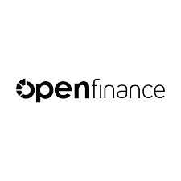
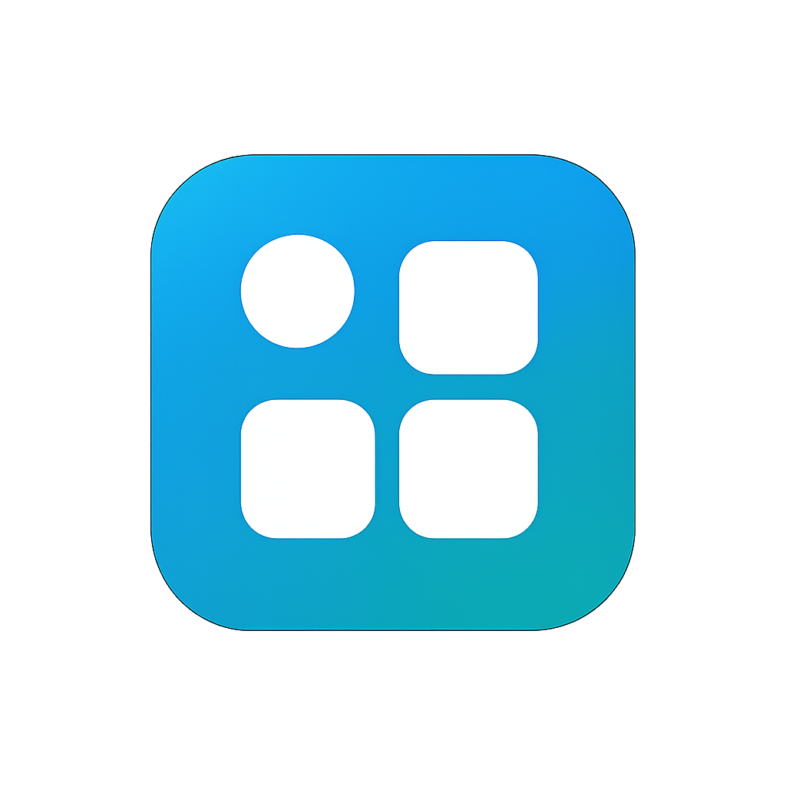

Projetos em destaque
Soluções desenvolvidas para grandes empresas, focadas em automação e integração corporativa.

Robô de Impressão de Notas
Automação que imprime mais de 50.000 notas fiscais.

Integração RH via API
Robô que recebe dados de APIs e registra automaticamente no sistema.

Robôs Financeiros
Consolidação financeira e ajustes contábeis em SAP.

Scripts de Automação
Automatização de rotinas internas corporativas.

Controle Financeiro Integrado
Integração Open Finance trazendo transparência e automação.

Sistemas Web & Apps
Desenvolvimento completo de sistemas web e aplicativos.
Outros Projetos Corporativos
- Automação de Conciliação Bancária – Banco BV Robô para cruzamento automático de extratos e geração de relatórios financeiros.
- Portal Financeiro Open Finance – Stone Sistema web para consolidação de contas, fluxo de caixa e dashboards.
- Robô de Cálculo Químico – Riachuelo Automação responsável por cálculos técnicos e validação industrial.
- Workflow Financeiro – Icatu Seguros Plataforma para controle de aprovações contábeis e integração SAP.
- Intranet Corporativa – Danone Portal institucional interno com mensageria e gestão documental.
- Automação de Faturamento – Siemens Robô para leitura de PDFs e lançamento automático de invoices.
- Dashboard de Indicadores – Stone Sistema para visualização de KPIs financeiros e operacionais.
- Robô de Processamento NF-e – Riachuelo Extração automática, armazenamento e envio de dados fiscais.
- Gestão de Contratos – Banco BV Plataforma interna para controle de contratos e integrações bancárias.
- Automação de Fluxo de Caixa – Icatu Consolidação automática de lançamentos contábeis.
- Robô de Integração SAP – Danone Automação de rotinas administrativas com leitura e gravação no SAP.
- Controle de Acessos – Siemens Gestão de permissões e autenticação corporativa.
- Mensageria Interna – Stone Sistema interno para comunicação entre departamentos.
- Relatórios Gerenciais – Banco BV Geração automática de relatórios financeiros em PDF.
- Robô de Cadastro em Massa – Riachuelo Inclusão automatizada de registros via integração API.
- Aprovação de Despesas – Danone Plataforma interna para validação e controle de reembolsos.
- Monitoramento Financeiro – Icatu Auditoria automática de inconsistências contábeis.
- Integração ERP APIs – Siemens Comunicação entre sistemas legados e aplicações modernas.
- Automação Administrativa – Stone Redução de tarefas repetitivas com RPA.
- Gestão de Documentos – Banco BV Controle e armazenamento digital de arquivos internos.
- Validação Financeira – Riachuelo Checagem automática de inconsistências em base contábil.
- Portal Institucional – Danone Site corporativo interno com autenticação segura.
- Automação Backoffice – Icatu Robôs para processamento de grandes volumes de dados.
- Gestão de Pagamentos – Siemens Plataforma para controle e acompanhamento de pagamentos.
- Robô de Extração PDFs – Stone Leitura automatizada de arquivos financeiros.
- Controle Orçamentário – Banco BV Sistema de acompanhamento de metas e orçamento.
- Integração Bancária API – Riachuelo Comunicação segura com instituições financeiras.
- Gestão Contábil – Icatu Seguros Consolidação automática de lançamentos.
- Automação de RH – Danone Processamento automático de admissões e desligamentos.
- Auditoria Financeira – Siemens Validação automática de dados contábeis.
 falar pelo WhatsApp
falar pelo WhatsApp